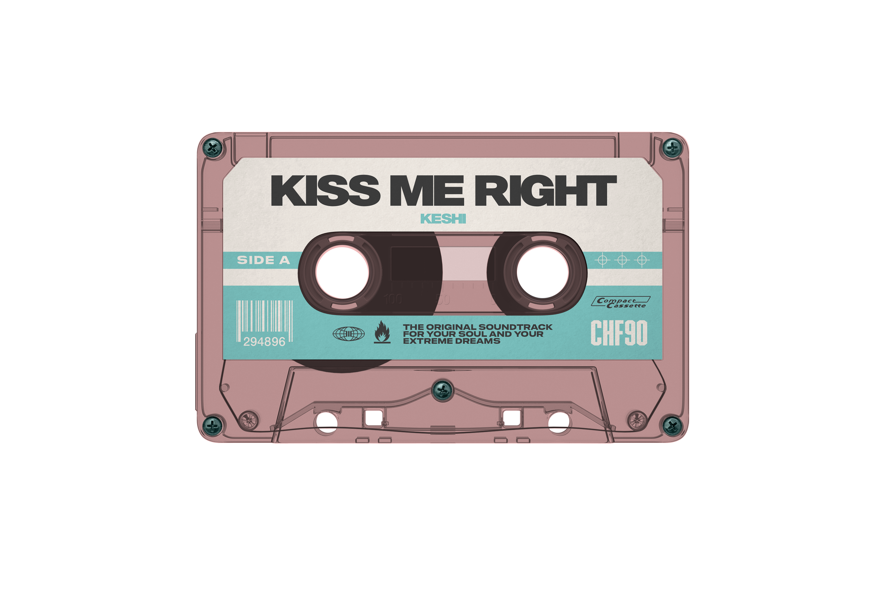
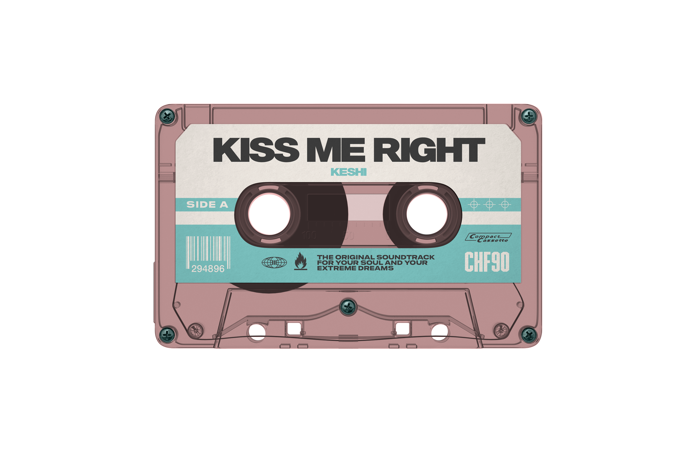

Kiss Me Right
keshi
Released Sept 20, 2024,
as a bonus track on Requiem (extended).
Built on electric guitar and lo-fi textures,
its mood is hushed and intimate.
Produced by Madeon,
co-written with Hugo Leclercq and keshi.
The mix and master were handled
by George Seara and Chris Gehringer.
Issued under Island Records,
with global distribution through Universal.
It highlights keshi’s evolving sound,
blending bedroom pop and R&B tones.